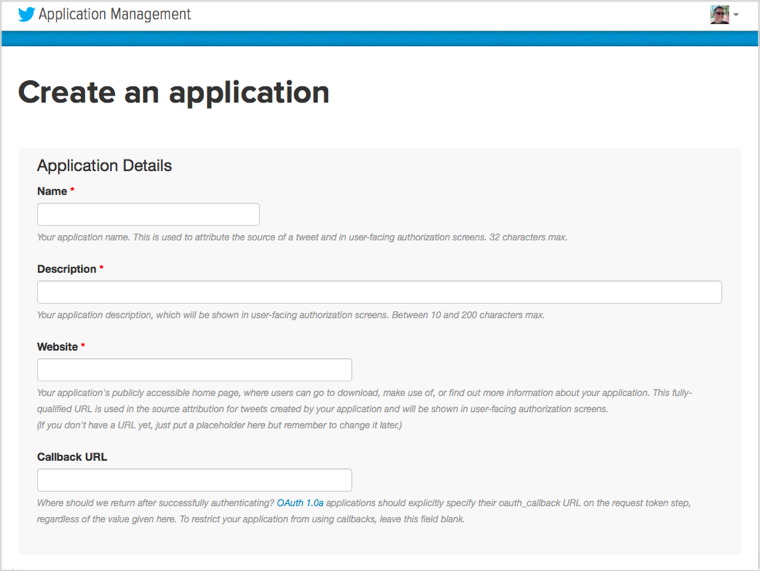
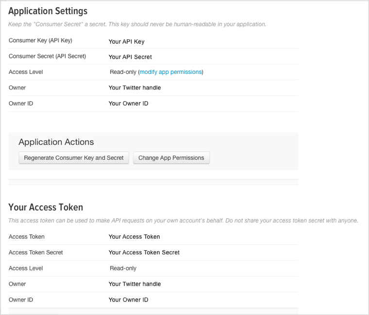

さて、個々の imp アプリケーションには2つのパート — エージェントコードとデバイスコード — があることを理解したので、自分のアプリケーション＝モデルを開発する準備ができました。ですが、必要とする全てのコードをどのように書き上げたらいいのかわからないと思うかもしれません。クラウドで動作し、Azure、AWS、PubNub、Twitterなどのサービスとアプリケーションを接続するソフトウェア。デバイスで動作し、LED、LCD、センサーやアクチュエーターなどのハードウェアに組み込みたい外部機器と通信するコード。これらはどのように書くのでしょうか。
良いニュースは、これらのコードの多くはすでにあなたのために既に書かれているということです。より良いことに、これらの既存ソフトウェアをあなた自身のモデルに組み込むことは本当に簡単です。
Electric Imp は、Webサービスからハードウェアのアドオンまで様々なものを表すオブジェクトのテンプレートとなる Squirrel クラスのライブラリを保持しています。これらのどれもが、単一の命令でコードに含めることができます。実は、これらのライブラリの1つである WS2812.class.nut をすでに使っています。しかし、ライブラリはもっとたくさんあります。例えば、ライブラリを利用して impExplorer の基板上のセンサーを使うことができます。また結果を公開するため Twitter ライブラリを使うこともできます。
お持ちの impExplorer に電源を入れてインターネットに接続します。今回は USB ポートは使わず、単三電池3本（同梱されていません）を impExplorerの裏側に挿し込んでください。
まだ設定がされていない場合はこのセクションにやり方が記載されています。
この Getting Started Guide の前のセクションを終えていれば、IDEがコンピュータ上で表示されているかと思います。もし開いていない場合は ide.electricimp.com に接続して、このガイドの最初のパートで作成したアカウントを使ってサインインしてください。
前のセクションで作成した “Hello World” モデルを開いてください。‘Models’ タブを開き、マウスポインタを‘Actions’ 列にもっていきコードのアイコン ( ) をクリックします。IDEのコード編集画面がワークスペース上に表示されます。
) をクリックします。IDEのコード編集画面がワークスペース上に表示されます。
例を実行するために必要なコードは以下の通り— すでにモデルに追加ずみのコードと置き換えてください。今回も2つのパートがあります。1つはデバイスのコード、もう1つはエージェントのコードです。下記の2つのリストからコピーして、それぞれ IDE ワークスペースの適切な場所に貼り付けてください。もし IDE のどちらの部分にどちらを貼り付けていいかわからない場合は、IDE のセクションに戻り思い出してください。
まずデバイスコードを見てみましょう。最初の3行は重要な行で #require ディレクティブを使って一連のライブラリを読み込んでいます。それぞれの行には、ダブルクオーテーションの間にライブラリ名と、 コロンで区切られたバージョン番号を見ることができます。このフォーマットは重要で、完全なライブラリ名と必要なバージョン番号の両方を含める必要があります。これらの2つの情報をコロンで区切り、それらをダブルクオーテーションで囲む必要があります。これはSquirrel コードではなくコンパイラに対する指示であるので、ディレクティブのあとにはセミコロンをつけないでください。
その後、 #require 文の後ろにデバイスコードの本文が続きます、というより続かなければいけません。
次に、定数と impExplorer のセンサーや RGB LED を参照するグローバル変数を宣言します。一連の測定値を取得し、LEDを点滅させてアクティビティを表示し、impExplorerをスリープ状態にしてAAバッテリを保持するときに呼び出される関数がその後に続きます。
次にある関数は前述の点滅を実行する部分で、LED を青にセットし、0.5 秒間休止してから消灯します。
最後のセクションでは、温度センサーと気圧センサーを表すソフトウェアオブジェクトをインスタンス化するため、Explore Kit の I2C バスを設定し使っています。 バスをローカル変数 i2c に割り当てていることに注意してください。グローバルではないすべての Squirrel 変数は、コンテクストに対して local キーワードを使いローカル変数としてマークする必要があります。次に Hello World セクションでやったように LED を設定し、最後に測定値を読み取る関数を呼び出します。
このプログラムは極めてリニアです。すべての設定を終え、測定値のセットを取得し、LED を点滅し、可能ならばimpOS にデバイスをスリープさせるよう指示します。 実際には、ここで関数を宣言する必要はありませんが、そうすることでプログラムをモジュール化し、関数として表されたコードの部分を 他のプログラムで使いやすくすることができます。
なぜ毎回セットアップをするのでしょうか？ imp がスリープする時、エネルギーを節約するため低電力消費状態に入ります。これはバッテリで電源を供給している場合はとても有用です。これは多くのエネルギーを消費するタイミングが、impExplorer の電源を投入するときだけで済むことを意味します（30行目の server.sleepfor() に渡されるsleepTime 定数で設定した2分ごとに、23行目にあるように測定値を取得し、それらを WiFi 接続で送信しています）。基板上の imp004m がスリープから復帰すると、Squirrel コードを新しい状態から開始します。そのためコンポーネントとバスを再度設定し直す必要があるのです。
なぜ29行目の server.sleepfor() を直接呼び出すだけではダメなのでしょうか？そうもできますが、imp API の imp.onidle() に関数を埋め込んで呼び出すことで、すべてをスリープさせる前に、impOS が必要とするハウスキーピングタスクを実行する時間を与えることができます。これは推奨されるアプローチです。imp.onidle() は、imp004m がアイドル状態になったときに呼び出される関数を登録します。ここでは関数の名前を渡さずに、インラインで関数宣言を使用しています。
今、どのようにライブラリがコードに読み込まれるか理解したので、エージェントで何が起こっているかわかりますよね。今度もまた、プログラムの最初で Twitter ライブラリを読み込んでいます。忘れないでください。この行は最初に来なければいけません — コードの後ろの部分でライブラリを追加することは出来ず、その場合には無視されます。また #require 文にコードコンパイラが必要とするすべての情報、 完全なライブラリ名とバージョン番号が含まれていることを確認してください。
エージェントは Twitter ライブラリを Twitter のアクセスクレデンシャル（後述）を設定するオブジェクトとなる tweeter を生成するのに使います。エージェントがデバイスが移動したことを示すメッセージ ("reading.sent") をデバイスから受け取った時、呼び出される関数を登録します。この関数はデバイスから送られたデータを抽出し、Twitter クラスのインスタンスがつぶやくメッセージに挿入します。
このコードをあなた自身で試すためには、Twitter に行き、アプリ開発者として登録する必要があります。Twitter のウェブサイトに行き、ご自身の Twitter アカウントでサインインしてください。もし Twitter アカウントをお持ちでなければ、今すぐ取得する必要があります。サインインしたら アプリ管理のページに進んでください。ここで必要なことは、‘Create New App’ ボタンを押して Twitter がリクエストする情報を入力することです。

この手続きは、Twitter フィードを自身のコードに埋め込むアプリ開発者を対象としています。まだ我々はアプリを開発していませんが、同じアプローチを使います。アプリをセットアップしたら ‘Keys and Access Tokens’ タブを探してください。ここに4つのコードがあります — Consumer Key (API Key), Consumer Key Secret (API Secret), Access Token and Access Token Secret — これらがエージェントコードにコピーが必要な値となります。

これらの4つの値を1つずつ選択し、エージェントコードに貼り付けます（22∼25行目）。そして 'Build and Run'をクリックし、あなたの Twitter ストリームを見てみてください！
我々が提供しているすべてのライブラリを見るには — リストは常に増えています — ライブラリのページをご覧ください。コードにライブラリを含める方法、トラブルシューティングのガイダンス、あなたが書いたライブラリを Electric Imp Platform 経由でアクセスできるようにする方法など、より多くの情報も含まれています。
Electric Imp の開発者として次に進むべき場所を知るには、次のセクションをご覧ください。
次のセクション に進むか 最初のセクションに戻る